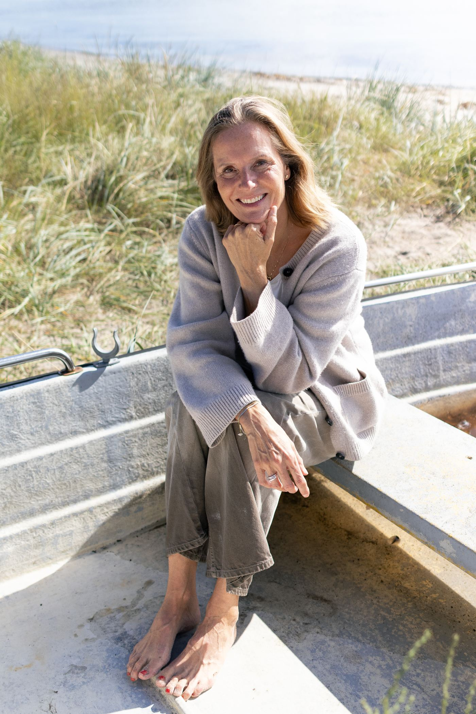
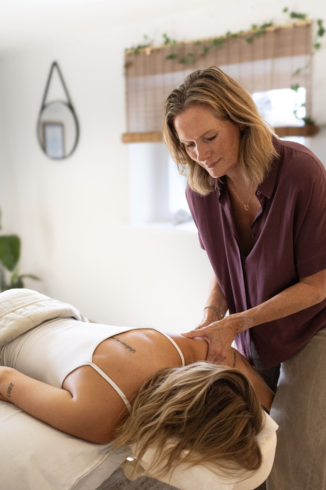
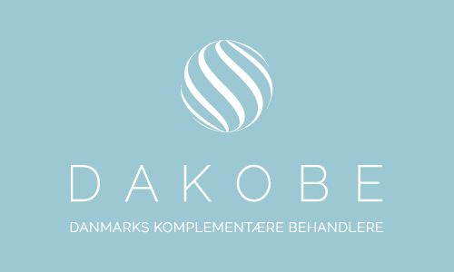

Kropsterapeut & Manuvision-behandler
Om mig
Jeg mødte Manuvision på et tidspunkt, hvor mit liv var ved at tage en drejning. Efter mange år i det, der på mange måder lignede drømmejobbet, måtte jeg erkende, at jeg ikke havde hjertet med i mit arbejde. En voksende interesse for kroppen, en nysgerrighed på samspillet mellem det fysiske og det mentale, fik mig i retning af Manuvision.

Jeg har behandlet siden 2017, blev certificeret Manuvision-behandler i december 2018, og har videreuddannet mig lige siden.
- Diplomuddannet, med fokus på KAM (Komplementær Alternativ Medicin), Kropspsykologi og traumeforståelse
- DAKOBE-registreret
- 370 timers uddannelse og løbende supervision gennem hele forløbet
- 100+ timers efteruddannelse i chok- og traumeterapi, Manuvision og kropsterapi
- Certificeret siden 2018
- Bred erfaring

Min historie
Jeg stod pludselig et sted, hvor jeg kunne mærke jeg havde brug for at finde mening. Mening med både mit arbejdsliv og måske også mening med selve livet. Det var nødvendigt at skifte retning for ikke at miste mig selv. Både karrieremæssigt og personligt søgte jeg derfor efter en hverdag, med dybere mening og mere plads til både krop, sind og sjæl – plads til hele mig.
En voksende interesse for kroppen, en nysgerrighed på samspillet mellem det fysiske og det mentale, fik mig i retning af Manuvision. En retning hvor jeg lytter til kroppen, passer bedre på mig selv og samtidig kan hjælpe og inspirere andre.

Hvad andre siger
Jeg gik til Mette i en periode med stor uro i kroppen, og jeg blev mødt med en varme og faglighed, der gjorde hele forskellen. Jeg mærkede en tydelig forandring efter blot få behandlinger. — tidligere klient
Efter fysisk aktive år og en skade i kroppen fandt jeg endelig ro hos Mette. Jeg føler mig hørt, set og godt behandlet hver gang. — tidligere klient